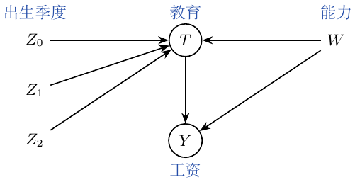

第8章：工具变量
假设 \[Y_i=\beta_0+kT_i+\beta W_i+u_i,\] 其中 \(T\) 是处理，\(W\) 是混杂变量。当 \(W_i\) 不可观测时，拟合 \(Y_i=\beta_0+kT_i+v_i\)，其中 \(v_i=\beta W_i+u_i\)。此时 \(\operatorname{Cov}(T,v)\ne0\)，所以 \(k\) 的估计有偏。未观测项携带着联系 \(T\)、\(Y\) 的信息。
引入工具变量 \(Z\)：它与 \(T\) 相关，只通过 \(T\) 影响 \(Y\)，且 \(\operatorname{Cov}(Z,v)=0\)。图为 \(Z\to T\to Y\)、\(W\to T\)、\(W\to Y\)。因此 \[\begin{aligned} \operatorname{Cov}(Z,Y)&=\operatorname{Cov}(Z,\beta_0+kT+v)\\ &=k\operatorname{Cov}(Z,T)+\operatorname{Cov}(Z,v)=k\operatorname{Cov}(Z,T),\\ k&=\frac{\operatorname{Cov}(Z,Y)}{\operatorname{Cov}(Z,T)} =\frac{\operatorname{Cov}(Y,Z)/\operatorname{Var}(Z)}{\operatorname{Cov}(T,Z)/\operatorname{Var}(Z)}. \end{aligned}\] 分子、分母都是回归系数。分子是简约式（reduced form）系数：\(Z\) 只经过 \(T\) 对 \(Y\) 产生的影响。
我的微积分直觉。 \[k=\frac{dY/dZ}{dT/dZ}=\frac{dY}{dZ}\frac{dZ}{dT}=\frac{dY}{dT}.\] 若工具变量是二元的，Wald 估计量为 \[k=\frac{E[Y\mid Z=1]-E[Y\mid Z=0]}{E[T\mid Z=1]-E[T\mid Z=0]}.\] 我的理解是：把 \(Z\to Y\) 的变化换算回 \(T\to Y\) 的作用。
工具变量的使用。
例子中，\(Z_0\) 是出生季度，\(T\) 是教育，\(W\) 是能力，\(Y\) 是工资。相关性 \(\operatorname{Cov}(Z,T)\ne0\) 可从第一阶段检查。我后来的修正：“\(Z\) 只通过 \(T\) 影响 \(Y\)”是排除限制，不是 \(Y\perp Z\mid T\)；第9章用潜在结果重新表述。 给定 \(T\) 反而可能打开碰撞路径 \(Z\to T\leftarrow W\to Y\)。
先回归 \(T\sim Z_0\)，检查第一阶段关系；再回归 \(Y\sim Z_0\)，看简约式关系。方法一是取两个回归系数之比。方法二是 2SLS：
将 \(T\) 对 \(Z_0,Z_1,Z_2\) 回归。
将 \(Y\) 对拟合后的 \(T\) 及 \(Z_1,Z_2\) 回归： \[Y\sim\underbrace{\widehat T}_{\text{用 }Z_0,Z_1,Z_2\text{ 拟合}}+Z_1+Z_2.\]
公式接口可以指定 \(T\sim Z_0\)，因为其他项会在第二阶段自动加入。 用作比较的 OLS 写作 \(Y\sim T+C(Z_0,Z_1,Z_2)\)。
第一阶段很弱时，IV 估计会不精确。在工具变量有效、足够强且数量固定的常规渐近设定下，2SLS 可以一致，而 OLS 仍不一致。有限样本中的 2SLS 可能偏向 OLS；加入过多弱工具变量会加重这一问题，不能仅凭工具数量增加就认为偏差单调下降。

工具变量、处理、混杂因素与结果。
导数约分是我对可微单一路径的直觉；本节常斜率模型的依据是上面的协方差推导。两阶段设定中的 \(Z_1,Z_2\) 是纳入的外生控制变量，两个阶段都要保留。